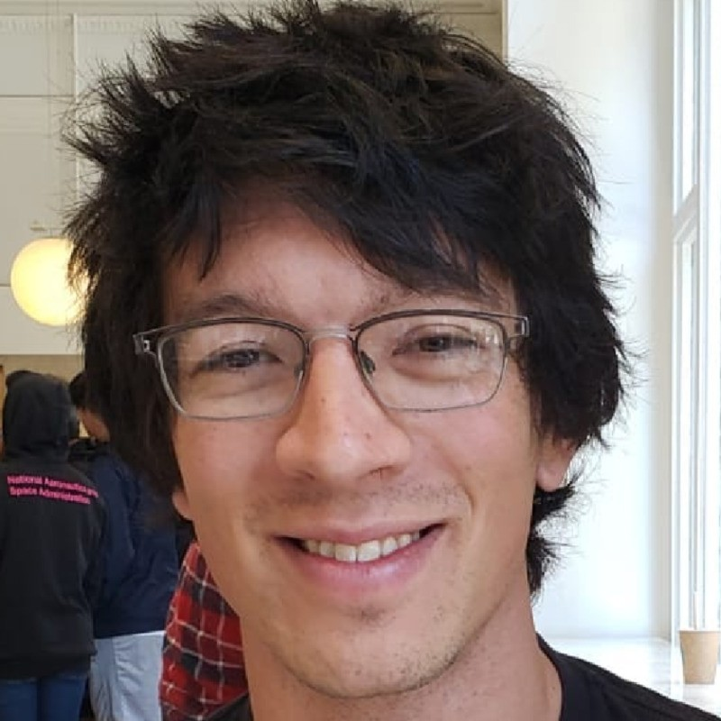

I am a computational neuroscientist interested in brain dynamics, information processing, and learning. I am currently chief scientist at Neurotaxis, a company I founded after my postdoc to provide educational resources and neural data science consulting services to labs around world.
My specific research interests center around how the brain processes the complex, often never-repeating information streams we experience in day-to-day life and how this processing emerges from distributed symphonies of neural activity. How are such variable, yet richly patterned inputs processed by dynamic, ever-changing neural activity to support complex behaviors, and how is such processing impaired in disease? How do collective, macroscopic dynamics and computations emerge from the microscopic electrical activity of individual neurons, and how is information stored in the brain via synaptic and cellular plasticity to enable learning? To address these questions I combine ideas and tools from a range of disciplines including dynamical systems theory, statistical physics, time-series analysis, information theory, kernel theory, and high-dimensional computing.
Previously, I was a postdoctoral researcher at the Princeton Neuroscience Institute and the Center for the Physics of Biological Function, where I developed methods for inferring neural computations from natural behavior data and thereotical models for the neural basis of working and episodic memory. I have also been a teaching assistant for several computational neuroscience courses, including the Allen Institute’s Summer Workshop on the Dynamic Brain, the IBRO-Simons Computational Neuroscience Imbizo, and Coursera’s Computational Neuroscience course.
Check out some of the online tutorials I’ve made or my tips & tricks for improving your computational research experience.
rkp dot science at gmail dot com